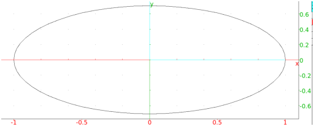

13.12.1 The ellipse in the plane: ellipse
See Section 14.11.1 for ellipses in space.
The ellipse command draws ellipses and other conic sections.
ellipse can take parameters in different forms.
-
-
ellipse can take one parameter:
eqn, a second degree equation in the variables x
and y (or an expression which will be set to zero).
- ellipse(eqn) returns and draws
the conic section given by eqn.
Example
Input:
ellipse(x^2 + 2*y^2 - 1)
Output:

-
ellipse can take three arguments:
-
A,B, two points.
- C, a point or a real number.
- ellipse(A,B,C) returns and draws the ellipse with
foci A and B and passing through C (if C is a point) or
whose semi-major axis has length C (if C is a real number).
Note that if the third argument is a point on the real axis, the
real affix of the point won’t work, it needs to be specified with
the point command.
Examples